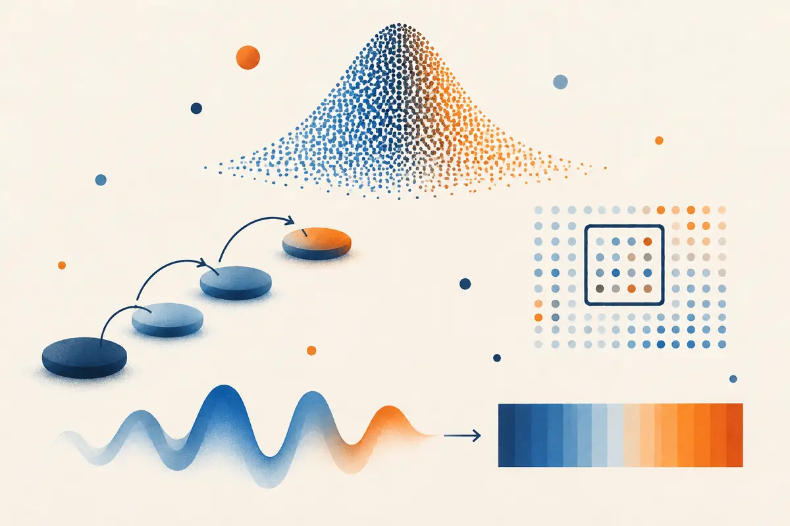
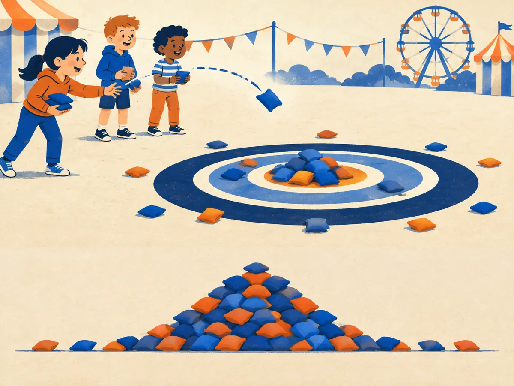

Gaussians & noise
A diffusion model starts from pure noise and sculpts it into an image. A VAE squeezes every picture into a small cloud of noise and decodes it back. Both speak the same language: the Gaussian, or normal, distribution. This lesson gives you its formula, its rules of thumb, how to sample from it, and the one equation that turns a picture into noise.

By the end you can
- Read the normal density formula symbol by symbol and use the 68–95–99.7 rule.
- Sample any Gaussian with $x = \mu + \sigma\varepsilon$, and add independent Gaussians (their variances add).
- Explain the diffusion forward process $x_t = \sqrt{\bar\alpha_t}\,x_0 + \sqrt{1-\bar\alpha_t}\,\varepsilon$ and what its signal-to-noise ratio measures.
Take your best guess. Being wrong now helps the right answer stick later.
Adult heights in a country are roughly bell-shaped, with mean 170 cm and standard deviation 10 cm. About what fraction of adults are between 160 and 180 cm?
- About 50%
- About 68%
- About 95%
- Nearly 100%
You add two independent sources of random noise to a signal. Each has standard deviation 1. What is the standard deviation of their sum?
- 2
- 1
- About 1.41
- 0, because they cancel out on average
Mean, variance and the curve that is everywhere
In 1733, Abraham de Moivre wanted the odds of getting, say, between 1,800 and 1,850 heads in thousands of coin flips. Adding up thousands of binomial terms by hand was hopeless, so he found a smooth bell-shaped curve that approximates them. In 1809 Carl Friedrich Gauss used the same curve to model errors in astronomical measurements, which is why it carries his name. A year later Pierre-Simon Laplace proved an early form of the central limit theorem: add up many small, independent random effects, and the total is approximately bell-shaped, whatever the individual effects look like.
That theorem is why the curve is everywhere: measurement errors, heights, sensor noise. It is also why generative models chose it. Gaussian noise is the simplest "pure randomness" to write down, to sample and to calculate with.
Two numbers describe a Gaussian completely:
- The mean $\mu = \mathbb{E}[X]$, the probability-weighted average from P1.5. It sets the centre.
- The variance $\sigma^2 = \mathbb{E}\big[(X - \mu)^2\big]$, the average squared distance from the mean. It sets the spread. Its square root, the standard deviation $\sigma$, measures spread in the same units as $X$.
A tiny example. Five measurements: 4, 6, 5, 7, 3. The mean is $25/5 = 5$. The deviations from it are $-1, 1, 0, 2, -2$; their squares are $1, 1, 0, 4, 4$, which average to a variance of $10/5 = 2$. So $\sigma = \sqrt 2 \approx 1.41$. Squaring stops positive and negative deviations from cancelling, and punishes big deviations more than small ones.
Where you'll meet this later: the noise a diffusion model adds to images (G1.3), the cloud of codes a VAE maps images into (G1.1), the random starting point of every generated image or video (VD.2), and the random numbers used to initialise neural-network weights.
Four values: 2, 4, 6, 8. What is their standard deviation (dividing by the number of values)?
- 5
- About 2.24
- 20
- 1
The normal density, symbol by symbol
We write $X \sim \mathcal{N}(\mu, \sigma^2)$, "X is normally distributed with mean $\mu$ and variance $\sigma^2$". Its probability density is
$$p(x) = \frac{1}{\sqrt{2\pi\sigma^2}}\,\exp\!\left(-\frac{(x - \mu)^2}{2\sigma^2}\right)$$- $x$ is the value whose density we want; $\mu$ is the centre. The curve peaks at $x = \mu$ and is symmetric around it.
- $(x - \mu)^2 / \sigma^2$ is the squared distance from the centre measured in standard deviations. One $\sigma$ away gives 1; two $\sigma$ away gives 4.
- $\exp(-\,\cdot\,/2)$ turns that distance into a weight: 1 at the centre, $e^{-1/2} \approx 0.61$ of the peak at one $\sigma$, $e^{-2} \approx 0.14$ at two, $e^{-4.5} \approx 0.011$ at three. It falls off very fast.
- $\frac{1}{\sqrt{2\pi\sigma^2}}$ is the normalising constant that makes the total area exactly 1. A wider curve ($\sigma$ bigger) must be lower, so doubling $\sigma$ halves the peak.
A density is not a probability. Probabilities are areas under the curve, and the height can exceed 1: $\mathcal N(0, 0.1^2)$ peaks at about 3.99. The standard normal, $\mathcal N(0, 1)$, is the one we sample from and rescale:
The 68–95–99.7 rule holds for every normal distribution, because each one is a shifted, stretched copy of $\mathcal N(0, 1)$. Watch the second argument: $\mathcal N(\mu, \sigma^2)$ takes the variance, while code such as torch.normal(mean, std) and NumPy's normal(loc, scale) take the standard deviation.
Explain like I'm 5

Lots of children throw beanbags at a target on the ground. Everyone aims for the middle, but every throw wobbles a little: a gust of wind, a shaky arm, a slip.
Most beanbags land near the bullseye, fewer land a bit further out, and only a very few land far away. Pile them up and the heap has a bell shape. Where the heap is highest is the mean; how wide it spreads is the standard deviation.
Where it breaks: real throws can be lopsided (always missing to the left), and a real Gaussian has no edge at all. A throw a mile away is wildly unlikely but never impossible.
The noise on each pixel is $\mathcal N(0, 0.1^2)$. What is the peak height of its density, $\frac{1}{\sqrt{2\pi}\,\sigma}$?
- About 0.04: densities are always below 1
- 0.1, the same as $\sigma$
- About 3.99
- Exactly 1
Sampling, reparameterization and adding noise
A computer's random-number generator produces uniform numbers between 0 and 1. The Box–Muller transform (1958) turns two of them into two independent standard normals; in practice you call torch.randn or NumPy's standard_normal. Every other Gaussian is one line away:
Multiplying by $\sigma$ stretches the spread (the variance becomes $\sigma^2$); adding $\mu$ slides the centre. That's the last step of the animation above.
This rewrite has a name, the reparameterization trick, because it solved a real problem. In a VAE (Kingma & Welling, 2013), an encoder network outputs a $\mu$ and a $\sigma$, and the model samples a code from $\mathcal N(\mu, \sigma^2)$. "Draw a random number" has no gradient, so backpropagation (P2.3) couldn't reach the encoder. Written as $\mu + \sigma\varepsilon$, all the randomness sits in $\varepsilon$, which needs no gradient, and $x$ becomes an ordinary function of $\mu$ and $\sigma$: $\partial x / \partial \mu = 1$, $\partial x / \partial \sigma = \varepsilon$. Diffusion models write their noisy images in exactly this form.
Two more rules do most of the work in generative-model maths. If $X \sim \mathcal N(\mu_1, \sigma_1^2)$ and $Y \sim \mathcal N(\mu_2, \sigma_2^2)$ are independent, then
$$X + Y \sim \mathcal N\big(\mu_1 + \mu_2,\; \sigma_1^2 + \sigma_2^2\big), \qquad aX \sim \mathcal N\big(a\mu_1,\; a^2\sigma_1^2\big)$$The sum of independent Gaussians is again Gaussian; means add and variances add. Standard deviations combine like the sides of a right triangle.
Worked example
- A sensor has two independent noise sources, with $\sigma = 3$ and $\sigma = 4$.
- Variances add: $3^2 + 4^2 = 9 + 16 = 25$.
- Total standard deviation: $\sqrt{25} = 5$, not $3 + 4 = 7$.
- Sampling a height from $\mathcal N(170, 10^2)$ with the draw $\varepsilon = 1.5$: $x = 170 + 10 \times 1.5 = 185$ cm.
Your turn (faded example)
- $x = \mu + \sigma\varepsilon$ with $\mu = 3$, $\sigma = 2$, $\varepsilon = -0.5$. Then $x =$
- $X \sim \mathcal N(1, 4)$ and $Y \sim \mathcal N(2, 9)$ are independent. The variance of $X + Y$ is
- Its standard deviation, to two decimals:
You can only draw $\varepsilon \sim \mathcal N(0, 1)$. How do you get a sample from $\mathcal N(5, 9)$?
- $5 + 3\varepsilon$
- $5 + 9\varepsilon$
- $9 + 5\varepsilon$
- $5\varepsilon + 3$
Many dimensions, and noising data step by step
An image is a long vector: a 64×64 RGB picture has $64 \times 64 \times 3 = 12{,}288$ numbers. A "noise image" is 12,288 independent standard normals, one per number. That is the isotropic Gaussian $\mathcal N(\mathbf 0, \mathbf I)$: the same spread in every direction, so its density depends only on the distance from the centre,
$$p(\mathbf x) = (2\pi\sigma^2)^{-d/2}\exp\!\left(-\frac{\lVert \mathbf x - \boldsymbol\mu \rVert^2}{2\sigma^2}\right)$$where $d$ is the number of dimensions and $\lVert\cdot\rVert$ is the vector length from P1.1. One surprise of high dimensions: the squared length of a noise vector is a sum of $d$ independent $\varepsilon_i^2$, each with mean 1, so the length is almost always close to $\sqrt d$. For 12,288 dimensions, nearly every sample has length within a percent or two of 111. Noise vectors live on a thin shell, not near the centre.
Noising data. Diffusion models (Sohl-Dickstein et al., 2015; Ho et al., 2020) train on images that have been mixed with noise to a chosen degree. With clean data $x_0$ and a fresh $\varepsilon \sim \mathcal N(\mathbf 0, \mathbf I)$, the noisy version at step $t$ is
$$x_t = \sqrt{\bar\alpha_t}\,x_0 + \sqrt{1 - \bar\alpha_t}\,\varepsilon$$$\bar\alpha_t$ ("alpha bar") is a schedule that falls from 1 at $t = 0$ (clean) towards 0 at the last step $T$ (pure noise). It's the reparameterization trick again: mean $\sqrt{\bar\alpha_t}\,x_0$, standard deviation $\sqrt{1 - \bar\alpha_t}$. If each coordinate of $x_0$ has variance 1, the variances add to $\bar\alpha_t + (1 - \bar\alpha_t) = 1$ at every step, so this is called variance-preserving. How much image is left is the signal-to-noise ratio, $\text{SNR}(t) = \bar\alpha_t / (1 - \bar\alpha_t)$: signal variance over noise variance. A diffusion model learns to run this backwards (G1.3).
Playground: noise a shape into a blob
400 points, each with its own fixed $\varepsilon$, follow $x_t = \sqrt{\bar\alpha_t}\,x_0 + \sqrt{1-\bar\alpha_t}\,\varepsilon$. Dashed circles mark radius 1 and 2 of $\mathcal N(\mathbf 0, \mathbf I)$, which hold about 39% and 86% of its samples in 2D.
Try both schedules. With DDPM's original linear schedule (1,000 steps), the spiral is unrecognisable by about step 400 and the remaining steps add little; at $t = 1000$, $\bar\alpha \approx 4 \times 10^{-5}$. The cosine schedule (Nichol & Dhariwal, 2021) destroys information more evenly, one reason it became popular. Through all of it, the variance readout stays near 1.
Worked example
One pixel with $x_0 = 2$, at a step where $\bar\alpha_t = 0.64$, with the noise draw $\varepsilon = -1$:
- Signal weight $\sqrt{0.64} = 0.8$; noise weight $\sqrt{1 - 0.64} = 0.6$.
- $x_t = 0.8 \times 2 + 0.6 \times (-1) = 1.6 - 0.6 = 1.0$.
- $\text{SNR} = 0.64 / 0.36 \approx 1.78$: still more signal than noise.
At some step, $\bar\alpha_t = 0.5$. What is the signal-to-noise ratio?
- 0.5
- About 0.71
- 0, because the image is half destroyed
- 1
Why does $x_t = \sqrt{\bar\alpha_t}\,x_0 + \sqrt{1-\bar\alpha_t}\,\varepsilon$ keep the variance at 1, and why write noisy samples in this "$\mu + \sigma\varepsilon$" form at all?
You double the standard deviation of a normal distribution. What happens to the height of its peak?
- It doubles
- It halves
- It stays the same; only the width changes
- It drops to a quarter
Independent noises $\mathcal N(0, 0.3^2)$ and $\mathcal N(0, 0.4^2)$ are added to a signal. What is the standard deviation of the total noise?
- 0.7
- 0.25
- 0.5
- 0.12
In the variance-preserving forward process, what happens as $t$ approaches the last step $T$?
- $\bar\alpha_t \to 0$, so $x_t$ becomes almost pure $\mathcal N(\mathbf 0, \mathbf I)$ noise and the SNR approaches 0
- $\bar\alpha_t \to 1$, so the image gets sharper
- The variance of $x_t$ grows without limit
- $x_t$ becomes exactly 0
(From P1.5) For $\varepsilon \sim \mathcal N(0, 1)$, what is the expectation $\mathbb E[\varepsilon^2]$?
- 0, because positive and negative draws cancel
- 1
- 2
- It depends on the sample
Key takeaways
- A Gaussian is set by its mean $\mu$ and variance $\sigma^2$; its density is $\frac{1}{\sqrt{2\pi\sigma^2}}e^{-(x-\mu)^2/2\sigma^2}$, and areas, not heights, are probabilities.
- 68–95–99.7: the share of values within 1, 2 and 3 standard deviations of the mean.
- Reparameterization: $x = \mu + \sigma\varepsilon$ with $\varepsilon \sim \mathcal N(0, 1)$ samples any Gaussian and keeps gradients flowing.
- For independent Gaussians, means add and variances add.
- Diffusion's forward process $x_t = \sqrt{\bar\alpha_t}\,x_0 + \sqrt{1-\bar\alpha_t}\,\varepsilon$ is variance-preserving; $\text{SNR} = \bar\alpha_t/(1-\bar\alpha_t)$ falls from huge to near 0.
About 20 minutes: check the 68–95–99.7 rule by sampling, sample with the reparameterization trick, confirm that variances add, then forward-noise a 2D dataset and verify that the variance stays at 1. Runs free in your browser; nothing to install.
Adding cards schedules your first spaced review.